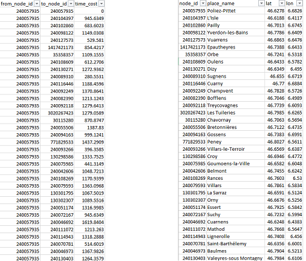

OSM Parser is a Java application that aims to allow the user to parse data from OpenStreetMap (https://www.openstreetmap.org/), in particular the roads and cities and turn them into a graph, perform opertions on it such as computing shortest paths, and export it as a CSV file, PNG or EPS image. The GUI uses the JavaFX library and osmosis to filter data from large .pbf files, (You can find them here). Osmosis is a command line tool that let you keep nodes or ways with specific tags, reject other with other tags, choose elements according to desired specifications, fetch elements from a database,..
The documentation and source code for osmosis can be found here :
Work still in progress. Please report all bugs.
git clone https://github.com/sjaubain/OSM-Parser.git
sudo apt install osmosis
Since JavaFX components don't come with Java development kit after version 8, it is strongly recommended to use version 8. If you are using a later version, you can temporarily downgrade it to 1.8. Otherwise, you will have to install JavaFX separately and set up your environment correctly.
As mentioned above, you can install the JDK 8 if you don't still have it. You may have to set the environment variable. Please refer for example to this site for more details. Once installed, type java -version to check that everything is correct. You should be able to launch the application by simply click on the .jar file or with the command line :
java -jar osmparser-1.0-SNAPSHOT-launcher.jar
With the linux based OSs, it is a little more tricky to set up javaFX, but there is a script called linux_setup.sh that install automatically all required tools. Just type
sudo bash linux_setup.sh
To run the application, type
sudo bash linux_launcher
If you get errors, try to check if you have a valid JDK installed on your machine with java -version. If two or more JDKs are installed you can choose which one you want to use with
sudo update-alternatives --config java
and same for javac, the java compiler. Try to rerun the script and this should be ok.
Once Osmosis is installed, you can download a country as .pbf file on geofabrik download server and put it in the /input folder. On the right pane, you can choose which type of road you want to filter (note that the ..._link categories should be taken with the corresponding type of road for a correct usage). If you want a complete networks, choose all options. (Warning : if your request involves too many nodes, i.e. too large map with too much roads, you will get a java heap out of space memory exception and the program will crash). You can also pick the bounds you want with left mouse button on the window you can open by clicking on the "choose bounds" button. Make sure that you pick the bounds on the region that corresponds to your .pbf file.
Then click on import and wait for osmosis to do its job; (You will see two times INFOS: Pipeline executing, waiting for completion. and will have to wait two times until you see INFOS: Total execution time: .... milliseconds.). After you have loaded the graph, you can zoom and drag with right mouse button on the map. Click on "show background" if you want to have a more precise idea about where you are. To compute shortest paths, you just have to click twice on the map to choose source and destination nodes.
You can export the graph in CSV format with File -> Export
All nodes composing ways and all edges will be exported, which can result in a large CSV file
Only cities nodes and edges between them (computed shortest paths) will be exported. Here is an output exmple :
